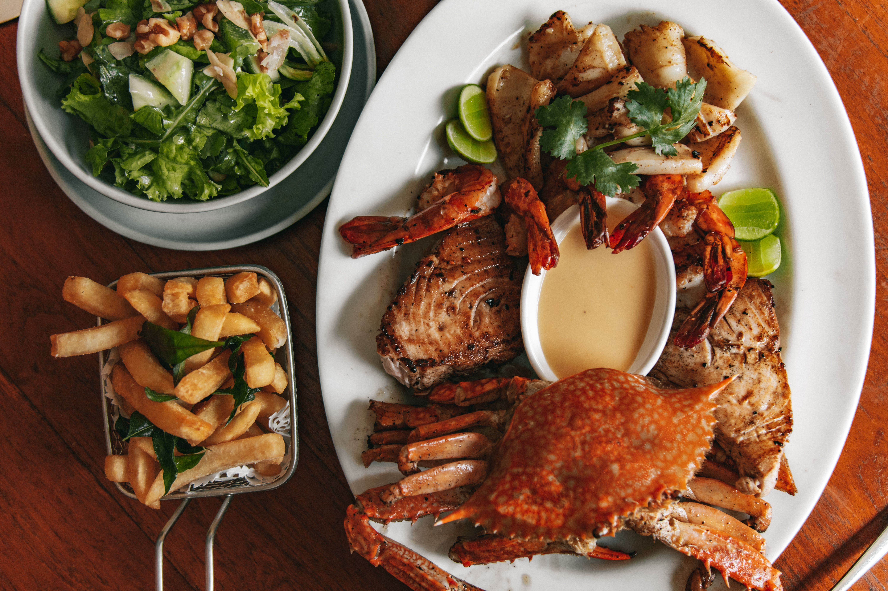

Explore Local Dining

Morehead City, North Carolina, has a
variety of dining options for visitors
who enjoy trying different foods.
The area is especially known for its
connection to fresh seafood and
coastal dining experiences.
Whether you're looking for a casual meal,
a seafood restaurant, or a place to eat
near the waterfront, there are different
options to explore while visiting.
Dining Experiences
Local Seafood Restaurants
Seafood is an important part of
Morehead City's coastal culture.
Visitors can find restaurants
serving different seafood dishes,
including fish, shrimp, and
other local favorites.
Trying seafood is a great way
to experience the food traditions
of the Crystal Coast.
Waterfront Dining
One of the enjoyable experiences
in Morehead City is eating near
the waterfront. Visitors can
enjoy a meal while taking in
views of the water and boats.
Waterfront restaurants can be
a relaxing choice for families,
couples, and visitors who want
to enjoy the coastal atmosphere.
Casual Restaurants and Cafes
Morehead City also offers casual
restaurants and cafes for visitors
who want a quick meal or a place
to relax after exploring.
These dining options can be
convenient for travelers who
want something simple during
a busy day of sightseeing.
Popular Coastal Foods
When visiting Morehead City, there
are several types of food worth
trying, especially if you enjoy seafood.
Fresh Fish
Fish is a popular seafood choice
along the North Carolina coast.
Restaurants may offer grilled,
fried, or blackened fish
depending on their menus.
Shrimp
Shrimp is another popular seafood
option. Visitors may find fried
shrimp, grilled shrimp, or shrimp
served with traditional Southern
side dishes.
Southern Coastal Favorites
In addition to seafood, visitors
can enjoy Southern-style meals
and side dishes such as hush
puppies, coleslaw, and other
regional favorites.
Morehead City's Seafood Traditions
Morehead City's connection to fishing
and seafood is an important part of
the area's history. Local fishing
traditions have helped shape the
North Carolina Seafood Festival
and the community's coastal culture.
Visitors interested in learning more
about these traditions can explore
the waterfront and attend local
events that celebrate the area's
seafood industry.
Helpful Dining Tips
Before choosing a restaurant,
here are a few things visitors
should keep in mind:
-
Check restaurant hours before visiting.
-
Look at menus ahead of time
to find food you enjoy.
-
Consider making reservations
during busy weekends.
-
Ask about seafood specials
and seasonal menu options.
-
Plan extra time for dining
during the summer tourist season.
-
Explore different restaurants
to experience a variety
of coastal foods.
Enjoy the Local Flavors!
Dining is one of the many ways
visitors can experience Morehead
City's coastal atmosphere.
Whether you're trying fresh
seafood or enjoying a casual
meal, there are plenty of
opportunities to discover
something delicious.
After enjoying a meal, visit
the
Indoor & Outdoor Activities page
to discover more things to do
around Morehead City.